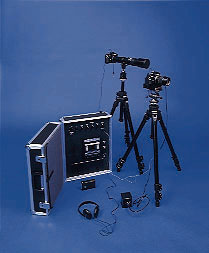

| video |
| home page |
|  | We welcome your comments and suggestions about this site. . Minnesota Cancer Surveillance System - Main Page We welcome your comments and suggestions about this site. It is an ongoing program within the Section of Chronic Disease and Environmental Epidemiology at the Minnesota Department of Health (MDH). The MCSS systematically collects demographic and diagnostic information on all Minnesota residents with newly-diagnosed cancers. |